Overview
To achieve its goal, P44D5 is composed of multiple panels, each offering the possibilty to manipulate specific musical parameters. All the panels that compose P44D5 can be controlled either via a MIDI controller, or using mouse and keyboard.
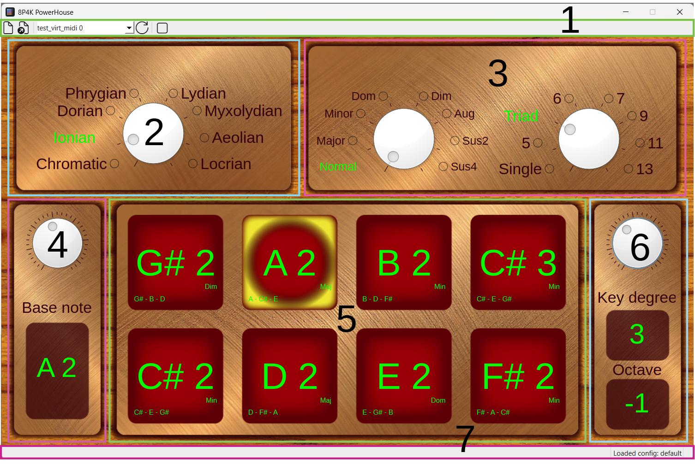
- Top bar
- Mode panel
- Chord panel
- Key note panel
- Pad grid
- Key degree panel
- Bottom bar
Top bar
The top bar gives you a set of action to manage MIDI controller configuration, discover and connect to MIDI controller and to apply a MIDI message bypass.
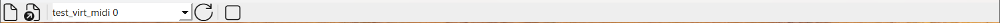
The top bar is divided in 3 sections:
- Configuration
- Connection
- Utility
The configuration section allow create or load MIDI configurations. You can find more details on the creation/editing process of MIDI configurations in the MIDI configurations section.
The connection panel provide you with a list of the MIDI device detected. You can refresh them using the refresh button . To connect to a MIDI controller detected by P44D5, simply select it in the list. The bottom bar will provide you with information on the success or the failure of the connection to this device.
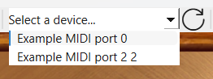
Refreshing and disconnection
At the moment, refreshing the list of available MIDI controller will disconnect you from the MIDI device you are currently connected to.
The last section of the top bar, is the utility section which contain the MIDI bypass. This utility allow you, as the name imply, to bypass P44D5 internal processing of the MIDI messages receive by the MIDI controller it is connected to. This is useful if you need to send the "vanilla" MIDI message of your controller to your target with having to
Mode panel
The mode panel provide you with the differents mode available.
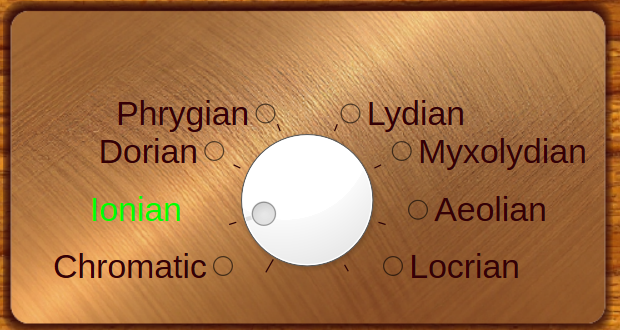
The chormatic mode, is simply the chromatic scale.
Chord panel
The chord panel provide you many options to create the chord you want to play. You can choose independantly the chord composition/"flavor" of the chord and its "size".
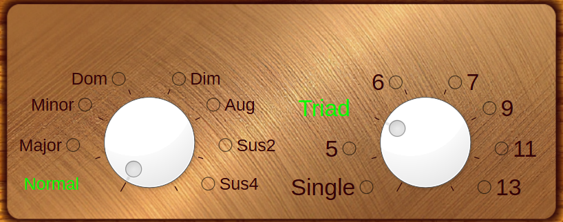
The first dial allows you to choose the chord composition/"flavor". You can choose the following chord flavor:
- Normal
- Major
- Minor
- Dom (Dominante)
- Dim (Diminished)
- Aug (Augmented)
- Sus2 (Suspended 2)
- Sus4 (Suspended 4)
The Normal "flavor" correspond to the implementation of the normal diatonic chord progression. So for example, if you chose the Ionian mode ("Major" mode), the chord progression will then be: major, minor, minor, major, dominante, minor, diminished, major. If you chose the aeolian mode ("Minor" mode), it will then be: minor, diminished, major, minor, minor, major, dominante, minor. The progression will adapt to the mode and the key degree you chose. it will also be displayed on the pads.
The second dial allows you to select the "size" of the chords you play. You can choose between the following option:
- Single: plays single note, the root of the chord
- 5: power chord
- Triad
- 6th
- 7th
- 9th
- 11th
- 13th
All chord "flavor" have access to all the "size" options, even if some chord "flavors" are not played in real life to such "size". The construction of each chord "flavor" is explained below using the following construction: [root, 3rd, 5th, 6th, 7th, 9th, 11th, 13th]
- Major: [0, 4, 7, 9, 11, 14, 17, 21]
- Minor: [0, 3, 7, 8, 10, 14, 17, 20]
- Dominant: [0, 4, 7, 9, 10, 14, 17, 21]
- Diminished: [0, 3, 6, 9, 9, 14, 17, 21]
- Augmented: [0, 4, 8, 9, 11, 14, 17, 21]
- Sus2: [0, 2, 7, 9, 10, 14, 17, 21]
- Sus4: [0, 5, 7, 9, 10, 14, 17, 21]
Chromatic and normal chord progression
When the chromatic mode and normal chord progression is selected, you won't be able to choose any other chord "size" than the single note one.
Indeed, as the normal chord progression is based on the chord progression from the diatonic scales, no equivalent was implemented to the chromatic scale.
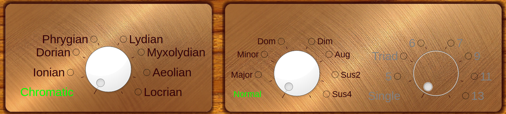
Key note panel
As the name imply, the key note panel allows you to choose the root note of the key you desire to play in. It doesn't necessarily imply it will be the note played on pad 1 and 8, as this can be change through the opposite panel, the key degree panel.
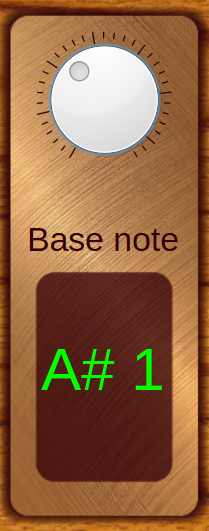
The panel inform you of the note you chose and also it's octave in the MIDI scheme. In the example above, the note A# has been chosen, and is in the 1st octave.
Pad grid
The pad grid provide you with the array of pad to play the note.
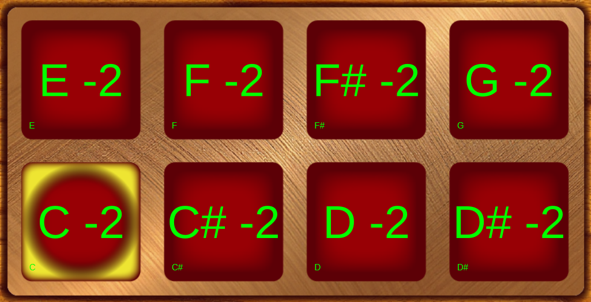
Each pad highlight many informations about the current state:
- Note played by the pad, or root not of the chord played by the pad
- When in a normal diatonic chord progression, it will display the "flavor" of the chord
- The notes that compose the chord
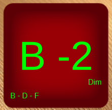
Additionnally it will also display a yellow halo in the background if the pad is playing the root note of the key.
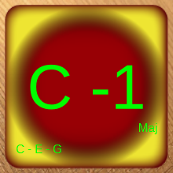
And it will display a cyan halo around itself when it is pressed.
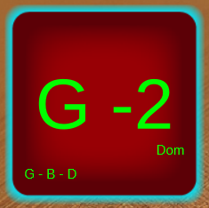
Key degree panel
The key degree panel allows you to chose the degree of the key you want to play in. This translate to the ability to change the order of the note associated with the pads.
As an example, let say with are in the key of C major (Ionian mode selected), as in the example below. We therefore have a diatonic scale composed of the note: C, D, E, F, G, H, A, B. We can see the root note, C, being highlighted in yellow.
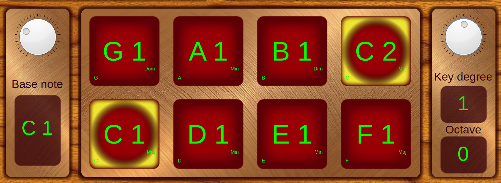
The note corresponds to C: 1st degree, D: 2nd degree, and so forth. In the example above, the key degree panel is set to 1. Now, let's change it to, let say, 2. We will be starting of from the 2nd degree of the scale. In the image below, you can now see that we kept the same key, the key of C major (with the root, C, highlighted in yellow), but the pads are now starting on D,the 2nd degree of the key.
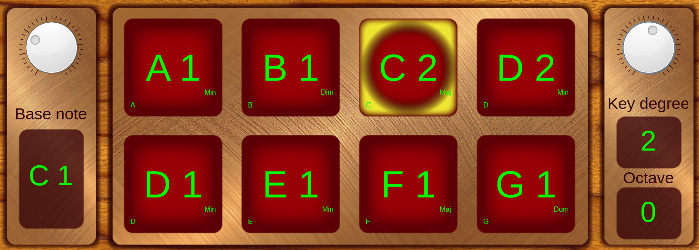
To allow for a greater range of motion through the note and octave whithout having to adjust the key note, you can move the key degree between -3 and +3 octave.
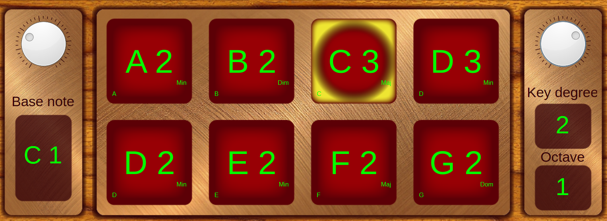
Key degree and chromatic mode
When the Chromatic mode is selected in the mode panel, the key degree panel is deactivated as it becomes redundant with the choice of a base note with the key note.
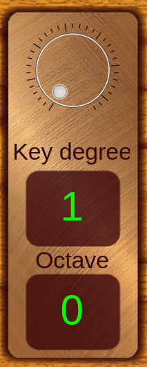
Bottom bar
The bottom bar is here to give you valuable information on the state of the software, and the success or failure of some actions.

On the far left of the bottom bar, information about the elements you are hover over will be displayed. On the far right, the loaded configuration file name is displayed. In between, error and success status of actions are displayed for a brief period after the action took place.